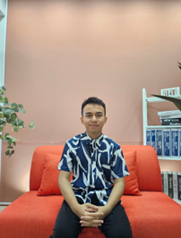
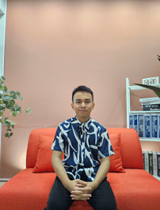
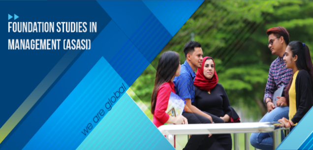
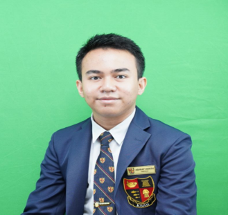
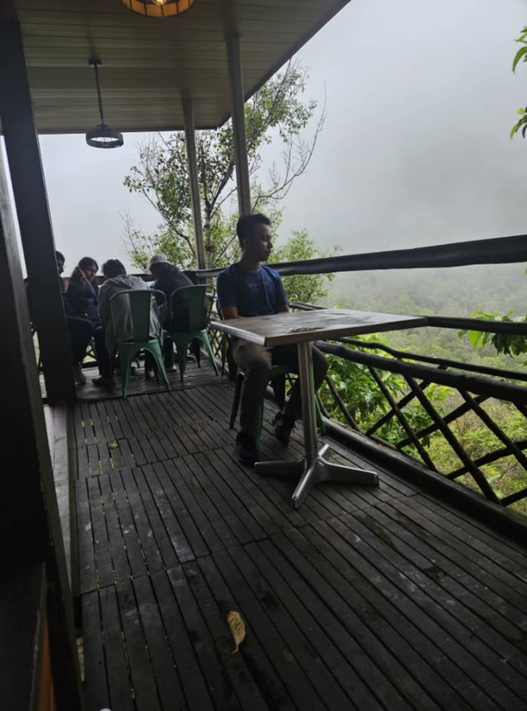

My Journey as a Foundation Student at UUM
Hello, my name is Ashraf Harith bin Abdul Halim. I'm currently a foundation student at Universiti Utara Malaysia (UUM), pursuing Studies in Management. I grew up in Alor Setar, Kedah, and from a young age, I've always had the passion to solve problems and help others succeed.
My academic journey started at Kolej Sultan Abdul Hamid, where I scored straight As in my SPM. The learning process built my confidence in communication and sharpened my analytical skills—something that helps me today in courses like Introduction to ICT and Principles of Management.
 Beyond academics, I value leadership experiences that shaped who I am. I served as:
- Prefectorial Board Secretary
- Chairman of Kadet Remaja Sekolah (KRS)
- Chairman of the Cooperative Club
These roles were more than just titles. They taught me how to organize events, manage people, and complete tasks on time. More importantly, they reminded me that empathy and teamwork matter. Listening to others often leads to better solutions. I'm deeply interested in the law, administration, and education sectors because they allow me to use research and communication skills to solve real-life problems.
Lessons I've Learned
- Persistence matters. Balancing studies and extracurriculars showed me that time management is not just a skill—it's an attitude.
- Resilience is key. Group project challenges taught me to adapt and turn failures into opportunities to improve.
These lessons fuel my excitement for the future. I've also shared more about my journey in a short vlog—feel free to check it out!
Posted on August 23, 2025
References
Covey, S. R. (2020). The 7 habits of highly effective people. Simon & Schuster.